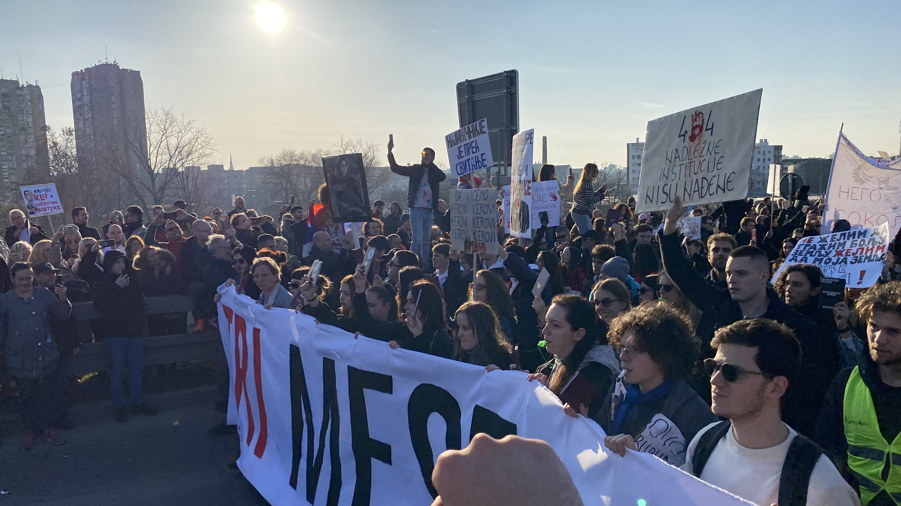
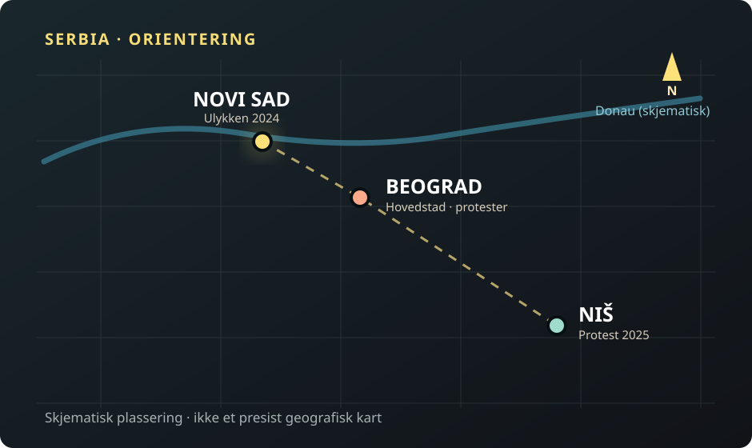

UTENRIKS / DEMOKRATI ·
De sørget i 16 minutter. To år senere vant studentbevegelsen valget.
Et betongtak raste sammen på en jernbanestasjon i Novi Sad og tok 16 liv. Katastrofen utløste protester som ikke ga seg. Nå har en studentstøttet valgliste vunnet 140 av 250 seter i Serbias nasjonalforsamling og brutt dominansen til partiet som har styrt landet i 14 år.

Søndag 1. november samlet mennesker seg ved jernbanestasjonen i Novi Sad. De la ned blomster og tente lys, to år etter at en betongkonstruksjon kollapset og drepte 16 mennesker. Samlingen var en minnestund. Den var samtidig en påminnelse om hvordan en lokal katastrofe ble et nasjonalt politisk oppgjør.
Da taket raste i 2024, var stasjonsområdet nylig renovert som del av et større jernbaneprosjekt. Det førte raskt til spørsmål om anbud, tilsyn, ansvar og mulig korrupsjon. Demonstranter krevde innsyn i dokumentene og at ansvarlige ble stilt til ansvar. Myndighetenes håndtering av protestene, og senere påstander om maktmisbruk mot demonstranter, gjorde konflikten større.
Det som startet som krav om sannhet etter 16 dødsfall, ble en bevegelse mot styresettet til daværende president Aleksandar Vučić og hans serbiske progressive parti, SNS. Vučić gikk av som president 27. september 2026, før parlamentsvalget.
Fra én stasjon til et helt land


Fra katastrofe til valgseier
Trykk på en hendelse for å lese hvordan protestene utviklet seg.
Stasjonstaket kollapser i Novi Sad
En betongkonstruksjon raser. Dødstallet stiger etter hvert til 16. Spørsmål om sikkerhet, renovering og ansvar utløser demonstrasjoner.
Studentene samler demonstranter i Niš
Titusenvis deltar i en demonstrasjon. Protestene er blitt landsomfattende, med støtte fra blant andre lærere og bønder.
Vučić går av som president
Avgangen kommer før parlamentsvalget. Det er fortsatt valg og formell maktoverføring som avgjør hvem som skal styre.
Studentlisten vinner valget
Studentlisten blir klart størst. Det gjennomføres omvalg ved 53 valglokaler 1. november før de endelige resultatene kunngjøres.
Resultatet godkjennes og mandatene fordeles
Valgkommisjonen bekrefter 140 mandater til studentlisten, 103 til Vučićs liste og sju til minoritetslistene.
Kilder: Reuters om minnemarkeringen, Reuters om Niš og valgkommisjonens endelige resultat.
En protest uten en vanlig partileder
Studenter blokkerte universiteter og holdt demonstrasjoner. Lærere, bønder og andre grupper sluttet seg til. Bevegelsen hadde en særskilt styrke: Den var ikke fra starten bygget rundt en tradisjonell opposisjonspolitiker, men rundt krav om ansvarlighet og offentlig innsyn.
Det gjorde den også sårbar. SNS og Vučić har framstilt deler av protestene som utenlandsk påvirkning og som forsøk på å undergrave staten. Bevegelsen avviser slike anklager og har konsentrert sin politikk om korrupsjon og institusjoner.
Fra gatene til stemmesedlene
25. oktober gikk serberne til nyvalg. Etter omvalg ved 53 valglokaler 1. november, godkjente Serbias valgkommisjon 5. november 2026 den endelige opptellingen. Dagen etter ble mandatene formelt fordelt: studentlisten fikk 140 av 250 seter, Vučićs liste «United Serbia» fikk 103, og fem minoritetslister delte de siste sju mandatene. Studentlisten har dermed flertall alene; grensen er 126 seter.
Kilder: RIK, endelig valgresultat 5. november og Serbias regjering, formell mandatfordeling 6. november. Valgresultatet er nå bekreftet, ikke en foreløpig prognose.
250 seter – slik ble de fordelt
Det kreves 126 seter for et flertall i Serbias nasjonalforsamling. Tallene er den endelige mandatfordelingen, ikke stemmeandeler.
En håndfull stemmer endret likevel regnestykket for de små listene. Da valget ble gjentatt ved 53 stemmesteder, slo valgobservatørene i CRTA fast at svært få stemmer skilte en minoritetsliste fra et mandat. CRTAs beregning, omtalt av N2, viste at Usame Zukorlićs liste ville komme inn og den studentstøttede listen få ett sete færre enn i den tidligere beregningen. Dette ble senere bekreftet i valgkommisjonens endelige fordeling. At få stemmer kan bli utslagsgivende, er ikke i seg selv bevis for valgfusk.
Hvorfor gir ikke stemmeprosent og mandater alltid samme fordeling?
Mandatene fordeles etter valgregler, ikke ved å gange hver liste sin prosentandel direkte med 250. Regler for minoritetslister kan gjøre at små endringer i stemmetall får betydning for det siste mandatet. 140 av 250 er et setetall, ikke en prosentandel av stemmene.
Valgkommisjonens endelige resultater viser både stemmetall og antall mandater per liste.
Hvordan ble sorg til politisk endring?
Fire steg i den dokumenterte utviklingen. Dette er Paradisavisas redaksjonelle forklaringsmodell, ikke en påstand om at utfallet var uunngåelig.
Faktagrunnlag: Reuters 1. november og RIK 5. november.
Kan en protestbevegelse styre?
Et valgresultat er ikke det samme som et ferdig regjeringsprogram. Studentlisten har samlet mennesker med ulike syn på forholdet til EU, Russland og Kosovo. Når den nye nasjonalforsamlingen skal møtes, må bevegelsen ta stilling til hvordan den vil skape endring innenfra. Første møte er varslet til 17. november, men en regjeringsdannelse er ikke det samme som en valgseier. AP om den kommende parlamentssamlingen.
Samtidig står et avgjørende spørsmål etter stasjonsulykken fremdeles ubesvart: Vil etterforskningen og rettssystemet kunne plassere ansvar for tragedien på en måte som de pårørende opplever som rettferdig? Påtalemyndigheten har tatt ut tiltale mot flere personer, men prosessen er komplisert, og de tiltalte bestrider skyld.
Det er kanskje derfor bildene fra Novi Sad betyr mer enn valgseieren alene. Bevegelsen startet med et krav om at døde mennesker ikke skulle bli glemt. Nå skal den vise om den kan skape en stat der offentlige beslutninger faktisk kan etterprøves.
Hva bør den nye nasjonalforsamlingen prioritere først?
Et frivillig spørsmål til leseren, ikke en meningsmåling i Serbia. Bare ditt eget svar lagres i denne nettleseren; ingen fellestall eller prosenter vises.
Avstemningen trenger JavaScript og sender ingen svar til en server.
Du valgte:
Dette viser bare ditt eget svar.